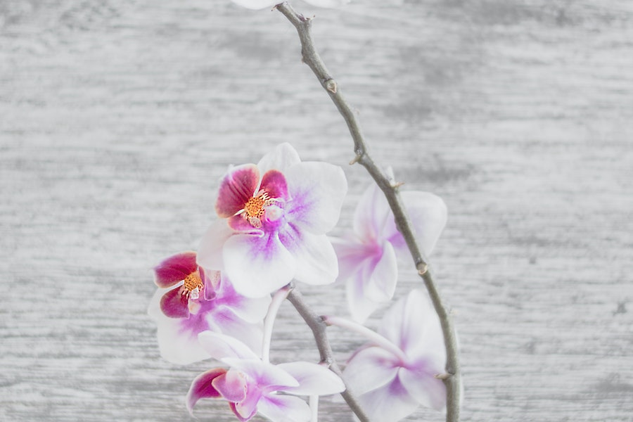
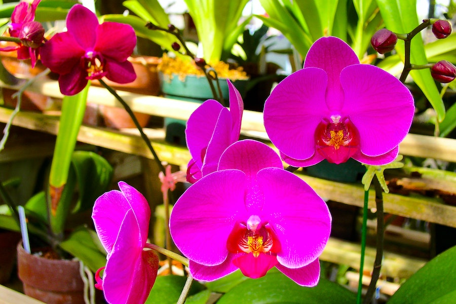

Imagens




As orquídeas formam uma das maiores famílias de plantas,com mais de 25.000
espécies conhecidas em todo o mundo.
Elas são encontradas em todos os continentes,
exceto na Antártica.
As orquídeas têm uma morfologia única, com flores frequentemente
bilaterais e simétricas,
o que as diferencia de muitas outras plantas.
Algumas orquídeas têm adaptações enganosas, como imitar a aparência de
insetos
para atrair polinizadores.
Muitas orquídeas têm polinizadores específicos,
o que significa que apenas um tipo particular
de inseto ou pássaro pode
polinizá-las com sucesso.
Algumas orquídeas podem viver por
muitas décadas, com algumas espécies registrando uma
vida útil
de até 100 anos.
Muitas orquídeas são epífitas, o que significa
que crescem em árvores ou outros objetos,
mas não são parasitas.
Elas retiram nutrientes do ar e da chuva.
Orquidofilia é um hobby popular em todo o
mundo. Muitas pessoas cultivam orquídeas em casa,
e a hibridização é
comum para criar novas variedades e cores.
Em muitas culturas, as orquídeas
são símbolos de beleza, amor, luxo e virilidade. No Japão, por exemplo,
a orquídea é considerada um símbolo de refinamento e elegância.
Algumas orquídeas têm usos medicinais tradicionais, principalmente na medicina herbal de algumas culturas.
Muitas espécies de orquídeas estão ameaçadas
devido à perda de habitat e coleta excessiva. Muitos esforços
de
conservação
estão em andamento para proteger essas plantas incríveis.
A baunilha é uma espécie de orquídea (Vanilla planifolia) e é a fonte da baunilha usada em alimentos e perfumes.
As orquídeas variam muito em tamanho,
desde espécies minúsculas que cabem na palma da mão até aquelas
com flores
impressionantes
e grandes que podem ter mais de um metro de altura.
Algumas orquídeas têm flores que duram muito tempo, semanas ou até meses, o que as torna populares em arranjos florais.
Orquídeas comuns, como as Phalaenopsis e
Dendrobium, geralmente têm preços mais acessíveis.
Elas podem ser
encontradas em supermercados, floriculturas e lojas de jardinagem
por preços
que variam de aproximadamente
R$ 20 a R$ 100, dependendo do tamanho e da qualidade da planta
Orquídeas de espécies raras ou híbridos
exclusivos podem ser mais caras. Os preços podem variar
de centenas
a milhares de reais, dependendo da raridade da planta.
Em exposições de orquídeas e eventos
especializados, os preços podem ser competitivos e mais elevados,
especialmente para plantas premiadas ou de colecionadores.
Muitas pessoas optam por cultivar suas
próprias orquídeas em casa, o que pode ser uma alternativa econômica.
O custo inicial para adquirir uma planta pode ser baixo, e o
cultivo bem-sucedido
permite que a planta floresça
novamente ao longo do tempo.
A compra de orquídeas online também é uma
opção. Nesses casos, os preços
podem variar dependendo do vendedor
e das condições de envio.